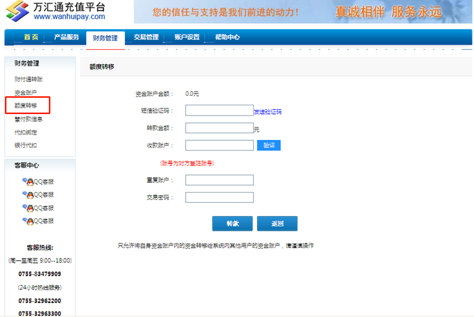

额度转移
1. 在“财务管理”选择【额度转移】，按要求填写操作：
* A.【资金账户金额】：显示用户帐户当前可操作转账金额；
* B.【转款金额】：输入需要转帐的金额； 输入金额须小于或等于资金账户当前可操作转帐金额。
* C.【收款账户】：转入的收款方资金账号，该账号为万汇通平台用户资金账号；备注：资金账号可在【账户设置】下【用户信息】中查看。
* D.【验证】：输入收款帐号后，点击验证，可进行查询收款方帐户信息，确保收款帐号无误。
* E.【重复帐户】：重复填写收款帐号，【交易密码】输入交易密码，点击【转款】即可完成转账。
温馨提示：额度转移只能转移自身帐号中的可用余额，用户之间的额度转移操作管理员无权干涉，建议用户谨慎操作。